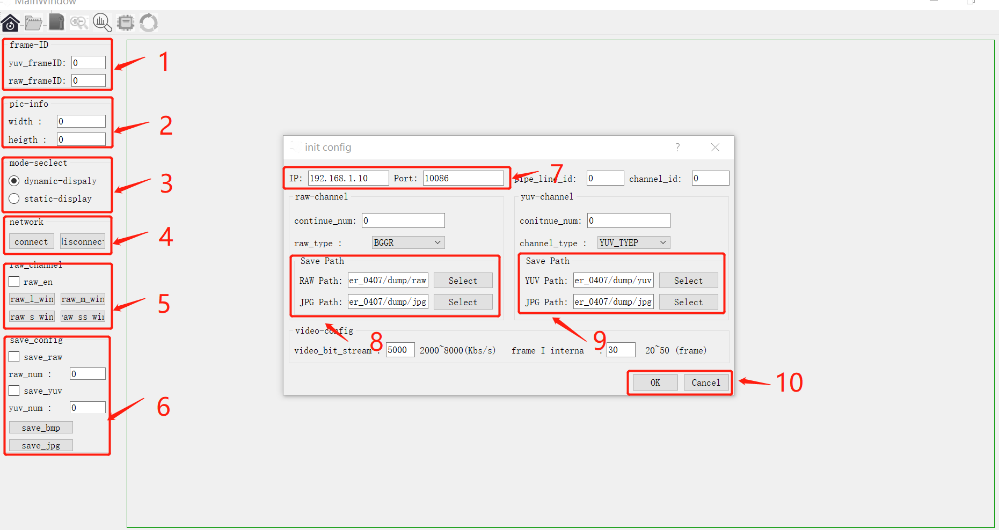
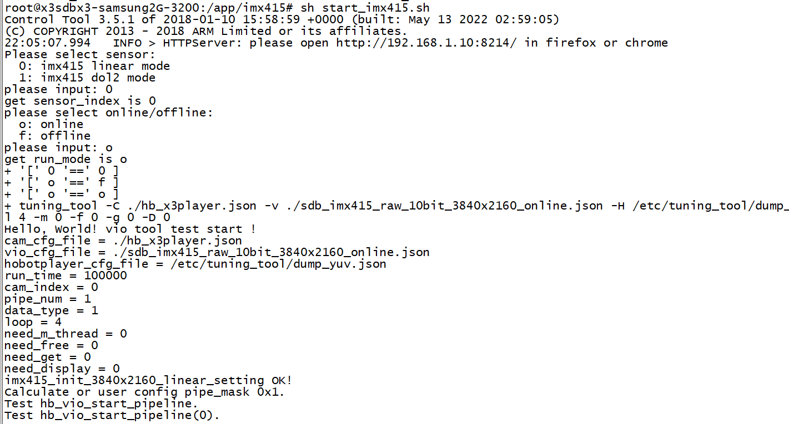
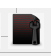
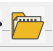
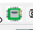
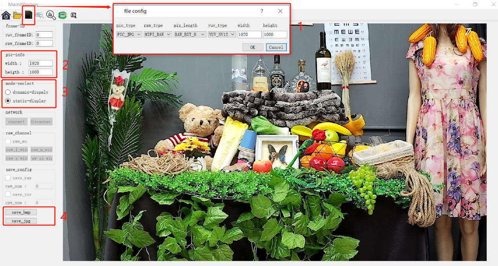
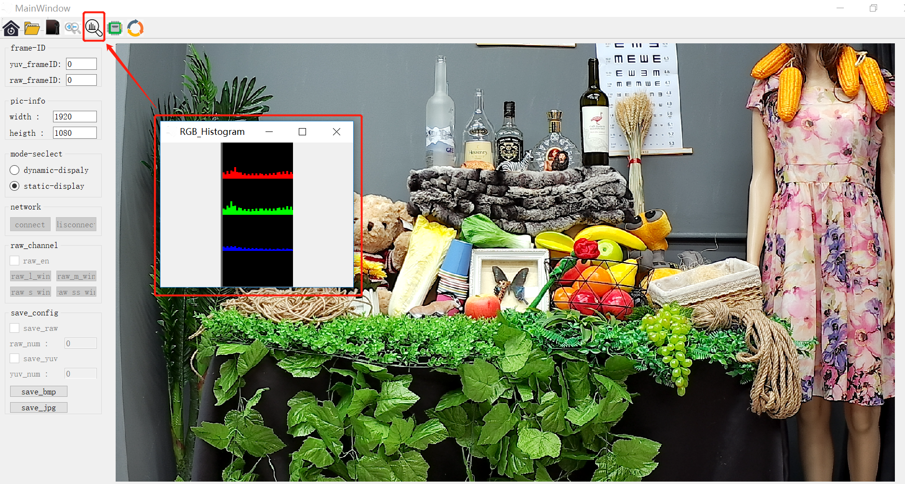
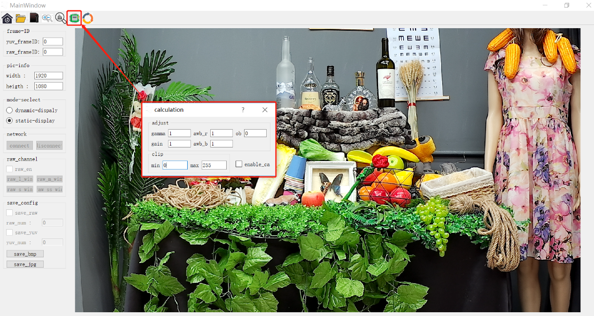

5.10.4. Hobot player工具指南
5.10.4.1. Hobot player 功能说明
Hobot player 用于isp-tuning查看图像效果的辅助调试工具。工具的界面如图3所示。图1中各部件的说明如表3所示。
Figure 3: Hobot player界面示意图.
| 序号 | 功能 | 说明 |
|---|---|---|
| 1 | 显示图片的frame-id | 该ID为硬件编号，0-65536循环 |
| 2 | 显示图片的尺寸信息 | 图像实际尺寸信息 |
| 3 | 网络传输/静态显示切换 | |
| 4 | 网络连接/断开 | |
| 5 | 打开RAW图显示界面 | 最多支持dol4 |
| 6 | 图像存储配置 | 可以存储连续多帧图像 |
| 7 | 配置网络和端口号 | X3设备网络IP及连接端口号 |
| 8 | 配置RAW图存储路径 | |
| 9 | 配置YUV图存储路径 | |
| 10 | 确认配置 |
Table 3: Hobot player功能列表.
Hobot player 软件包含图片网络传输/显示功能和静态图片辅助分析功能。网络传输显示功能规格如表4所示。
note 1: yuv和video不能同时支持，raw图dump只支持在offline时候使用。
note 2：raw图显示时将raw10/12/14/16取高位压缩成raw8转为rgb显示。
| 功能 | 说明 | 注意 |
|---|---|---|
| raw | 支持raw 8/10/12/14/16 | offline 模式支持 |
| yuv | 支持nv12 | online/offline模式支持 |
| video | 支持h264/h265 | online/offline模式支持 |
Table 4: Hobot player 网络传输显示规格.
静态图片辅助分析功能如表5所示，该部分包括图片存储，rgb 统计信息显示，网格，zoom 等功能。
| 功能 | 说明 | 注意 |
|---|---|---|
| 图片硬件帧号 | 帧号为硬件帧号，0-65535循环 | 网络传输时有效 |
| 图片尺寸信息 | 宽/高信息 | |
| 保存一定数量raw图 | 保存的raw 为mipi-raw格式 | 网络传输时有效 |
| 保存一定数量yuv图 | 保存的yuv 为nv12 格式 | 网络传输时有效 |
| raw/yuv 转bmp/jpeg | 该转换为第三方库，非硬件 | |
| 显示本地raw/yuv/bmp/jpeg图像 | 使用前需指定图像信息，否则会显示错误 支持raw8/10/12/14/16 支持nv12 | 静态显示时有效 |
| 图像增加网格/zoom | 支持放大/缩小固定比例 支持ctrl+滑轮放大/缩小 支持右键拖动 支持显示/设置网格 | 静态显示时有效 |
| 显示rgb通道统计信息 | 静态显示时有效 | |
| 画面效果调整 | 支持gamma/awb/ob/gain 支持clip(rgb 通道信息) | 静态显示时有效 |
| mipi-raw转arm-raw | 静态显示时有效 |
Table 5: Hobot player辅助调试功能.
5.10.4.2. Hobot player 使用说明
Hobot player网络传输
online 模式：支持获取yuv/video。online模式，vio 应用程序需配置数据通路为sensor-sif-isp-ldc-ipu-ddr 模式，yuv图像信息从IPU获取。
offline 模式: 支持获取raw/yuv(或video)。offline 模式，vio 应用程序需配置数据通路为sensor-sif-ddr-sif-isp-ldc-ipu-ddr模式，raw 图像信息从sif 获取，yuv图像信息从IPU 获取。
使用步骤：
1. 确保X3 与PC 端网络连接成功。
2. 串口(或SSH)登陆XJ3系统，把SDK下的hbre/sensors/xxx/start_xxx.sh拷贝到板子的/app目录，进入/app/xxx/目录，执行sh start_xxx.sh，待板子端tuning_tool程序跑起来之后，启动PC端的Hobot player server。执行该项需交互输入sensor类型，运行模式和运行时间。注意：imx327 接在J200位置，I2C5。运行过程如图4所示。
3. PC 端点击打开Hobot player，配置图3中的标号7的网络信息，点击图3中标号10的ok选项保存配置，同时点击图3中的标号4的connect建立连接，查看图像信息。

Figure 4: Hobot player图像显示.
Hobot player静态图片
打开本地图片时需要切换到静态显示模式，同时配置图片的的基本信息，包括图片类型，尺寸等。配置信息如图5所示，模块1为图形信息，包括选择raw/yuv/bmp/jpeg，及各种模式下的特性和图片尺寸。例如，打开1080p，12Bbits的mipi-raw图片点击图标配置pic_type为PIC_RAW，raw_type配置为MIPI_RAW，pix_length配置为RAW_BIT_12，width配置为1920，height配置为1080，然后点击选择需要打开的图像。点击可以显示当前图片RGB三通道的统计信息，统计信息如图6所示。点击调整图像效果，调整参数如图7所示，可以修改gamma/awb/ob/clip 信息，修改具体参数然后点击enable_ca生效。当前打开的图像为mipi-raw，则可点击转换mipi-raw为arm-raw。
note 1: 统计信息显示窗口自适应统计信息大小，不支持放大功能。

Figure 5: Hobot player图像显示.

Figure 6: Hobot player rgb统计信息.

Figure 7: Hobot player图像效果调整.